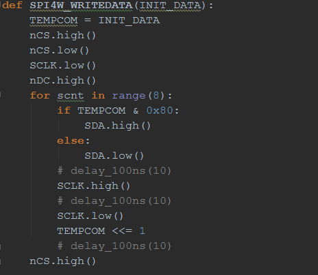

Projektidee
Derzeit werden zu Schulbeginn vor den Klassenräumen Stundenpläne ausgehängt. Diese werden bei Stundenplanaktualisierungen/-änderungen nicht upgedatet, somit ist nicht garantiert, dass Lehrer und Schüler ausreichend informiert sind. Die Idee der Diplomarbeit ist es eine elektronische Anzeige des Stundenplans vor einem Klasseraum zu realisieren. Somit können Lehrer und Schüler schneller über Supplierstunden informiert werden. Eine periodische Auffrischung und damit eine aktuelle Anzeige der Inhalte ist geplant.